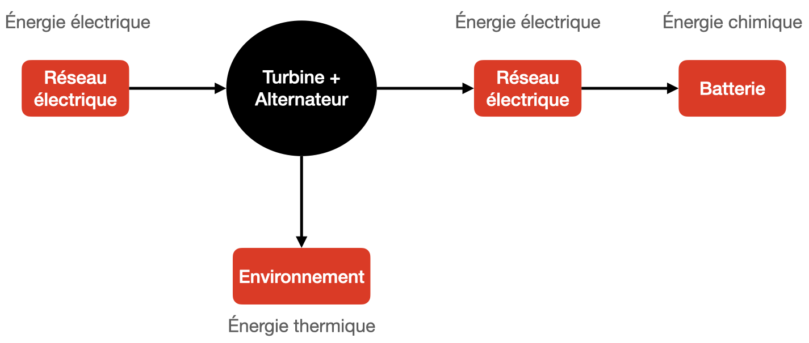

Cette activité permet d’étudier une chaîne énergétique complète en partant de l’eau du barrage pour aller jusqu’à l’appareil électrique, et donc de calculer le rendement global du système. Chaque conversion énergétique entraîne des pertes plus ou moins importantes, les rendements des dispositifs ne sont pas égaux à 1.
Documents
- Accès aux documents sur le Livre Scolaire
-
Quelques ressources supplémentaires (pas indispensables pour répondre aux questions) :
-
Principes des batteries Lithium-Ion :
-
Usages des batteries au Lithium-Ion
-
Les voitures du futur au Lithium-ion
-
Exploitation
- Déterminer l’énergie nécessaire pour remplir complètement la batterie du smartphone. Convertir cette énergie en joule ($\pu{1 J = 1 W⋅s}$, d’où $\pu{1 W⋅h = 3 600 J}$).
Réponse
L’énergie nécessaire pour remplir complètement la batterie du smartphone est : $E_{el} = \pu{11,40 W.h}$ soit $E_{el} = \pu{11,40 W.h} \times \pu{3 600 J/(W.h)} = \pu{41,04e3 J} = \pu{41,04 kJ}$.
- Réaliser la chaîne énergétique décrivant le parcours de l’énergie du stockage jusqu’à la batterie.
Réponse
- Identifier l’origine des pertes énergétiques lors de la production de l’électricité dans la centrale.
Réponse
Les pertes énergétiques au niveau de la centrale hydroélectrique viennent de l’alternateur (pertes thermiques) et des frottements de l’eau sur la conduite forcée.
- Calculer le rendement de la centrale hydroélectrique.
Réponse
-
Rappel : Rendement $$ r = \dfrac{E_{\text{utile}}}{E_{\text{fournie}}} $$
-
$r = \dfrac{\pu{2080 MJ}}{\pu{3600 MJ} - \pu{1270 MJ} - \pu{60 MJ}} = \pu{0,92}$
Il faut penser à ne compter que l’énergie mécanique qui a été réellement fournie à l’alternateur, et donc tenir compte de l’énergie mécanique à la sortie du barrage.
- Calculer le rendement global du système, de la production d’électricité jusqu’au stockage dans la batterie.
Réponse
Pour répondre à cette question, il faut procéder par étapes (on peut aussi appliquer sans comprendre la formule donnée dans le document mais c’est dommage) :
-
Énergie fournie par le barrage qui va être transférée sur le réseau électrique : $E_1 = r_1 \cdot E_{\text{fournie}}$ avec $r_1$ le rendement juste calculé à la question précédente.
-
Énergie qui parvient au niveau de la batterie : $E_2 = r_2 \cdot E_1$ où $r_2$ est le rendement du transport. $r_2 = \pu{0,94}$ puisqu’il y a 6 % de pertes.
-
Énergie restituée par la batterie : $E_3 = r_3 \cdot E_2$ où $r_3$ est le rendement lors du fonctionnement de la batterie. $r_3 = \pu{0,90}$
Finalement $E_3 = r_3 \cdot r_2 \cdot E_1$ et $E_3 = r_3 \cdot r_2 \cdot r_1 \cdot E_{\text{fournie}}$ donc $$ r_{\text{global}} = \frac{E_3}{E_{\text{fournie}}} = r_3 \cdot r_2 \cdot r_1 $$
A.N. $r_{\text{global}} = \pu{0,90} \times \pu{0,94} \times \pu{0,92} = \pu{0,78}$. Le rendement global est égale à 78 %.
- Calculer l’énergie prélevée au barrage pour la charge de la batterie.
Réponse
L’énergie prélevée dans l’eau du barrage pour recharger la batterie est : $$ E_{\text{fournie}} = \dfrac{E_{\text{utile}}}{r_{\text{global}}}$$
A.N. $E_{\text{fournie}} = \dfrac{\pu{41,04 kJ}}{\pu{0,78}} = \pu{53 kJ}$